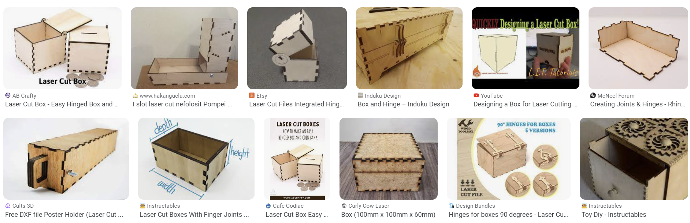

Verkefni 2 - Geislaskeri
Undirbúningur
Í einstaklingshlutanum á að hanna parametrískt, gerneglt (pressfit) módel af byggingar einingum. Módelið þarf að vera skalanlegt þannig hægt sé að stilla kerf og efnisþykkt, ásamt stærðum á flötum, með því að vinna með parametrískar breytur. Hægt er að velja á milli þriggja gerða af efni.
Í hóphlutanum á að velja geislaskera og ákvarða með prófunum kerf fyrir þann skera. Skjalfesta á sameiginlegri vefsíðu sem allir í hópnum geta hlekkjað á. Ég vann verkefnið með Kára Genevois.Kerf prófun
Geislinn í geislaskeranum tekur brennur hluta efnisins í burt sem mikilvægt er að gera ráð fyrir í teikningunum. Þetta kallast kerf en sú vegalengd er mismikil eftir hverjum geilsaskera. Hópurinn minn ákvað að stóra geilsaskerann, eða þann sem er innst í FabLab. Hér má sjá hvernig farið var að því en í lokinn mældist kerf-ið upp á 0,118 mm.
Hugmyndarvinna
Mjög einfalt, mér vantaði box þannig ég ákvað að gera box.
Hér eru myndir sem gáfu mér innblástur. Ákvað að gera press fit box sem er bara með festingar á botninum.
Vinna í Fusion 360
Eftir að hafa horft á afar góð myndbönd um hvernig best væri að vinna í Fusion 360 og um hvernig best væri að teikna upp hugmyndina með hjálp "parameters". Það er gert til þess að tryggja að hægt sé að breyta ákveðnum stærðum, eins og lengd brettis, og að teikningin aðlagi sig svo að þessum breytingum.
Hér er kassinn í Fusion
Og hér eru allir hlutirnir á sama plani sem er final stage-ið í fusion svo ég get hent því í Inkscape til þess að cutta það í geislaskeranum.
Kerf var mælt 0.118mm
Inkscape
Næsta skref var að flytja skrána í Inkscape áður en hún var klippt. DFX skráin var opnuð í Inkscape og stillt á 500mmx500mm í dimensions sem var efnis limit-ið og línubreiddina á 0,118mm. Síðan vistaði ég skrána sem PDF-skjal á USB-lykil og færði í tölvuna með laserskera.
Laserskurður
Skráin sem var tengd við laserskerann. Ég stillti hraðann á 20%, afl á 100%, tíðni á 10% og þykkt á 3mm.
Útkoman úr verkefni 2
Vinyl skurður
Fyrir hinn hluta verkefnisins ákvað ég að búa til Rammstein stimpil. Ég downloadaði logo-ið. 120mmx120mm voru dimension-in. Þetta ferli var gert í tölvunni sem var tengd við cutter-ann.
Ákvað að gera 4 tengipunkta á monitor hátalaranum svo það heldur hornréttleika og samsíða
Útkoman er fín, en gat verið betri. Teipið sem var notað vildi ekki sleppa á límmiðanum þannig það leiddi til smá skemmtilegar skekkjur á logo-inu.